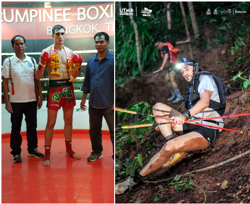

Fine-Tuning the Fighter: From Nak Muay to Ultra-Trailer
Baseline Model: A physiology overfitted for 5 rounds of explosivity (Muay Thai).
New Objective Function: Maximize endurance over 160km while minimizing the “Injury” loss function.
The Optimizer: Generative AI.
Project Chiang M-AI is a live experiment in Transfer Learning.
I am using LLMs to re-weight my fast-twitch muscle fibers into a diesel engine. The goal? Solving a complex domain adaptation problem: taking a body trained on the “Lumpinee Stadium” dataset and deploying it to the “UTMB” distribution.